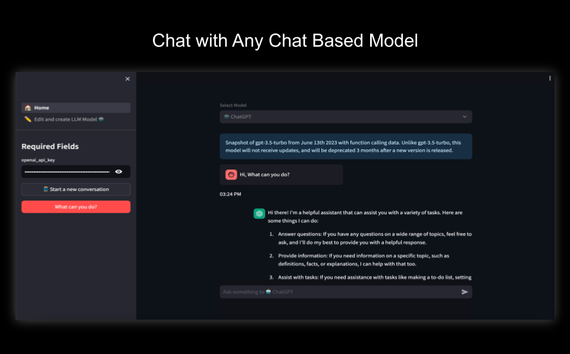
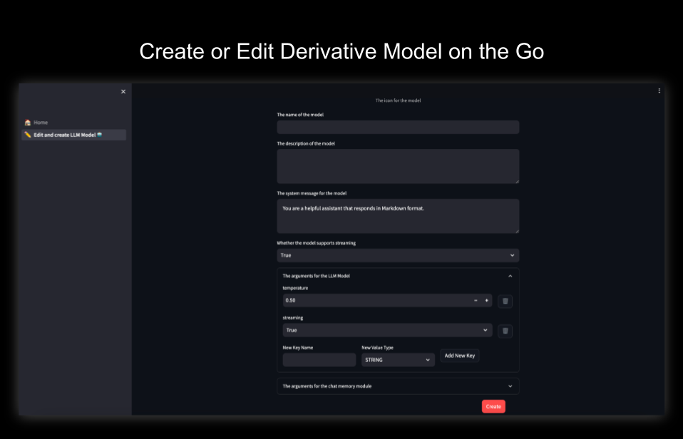
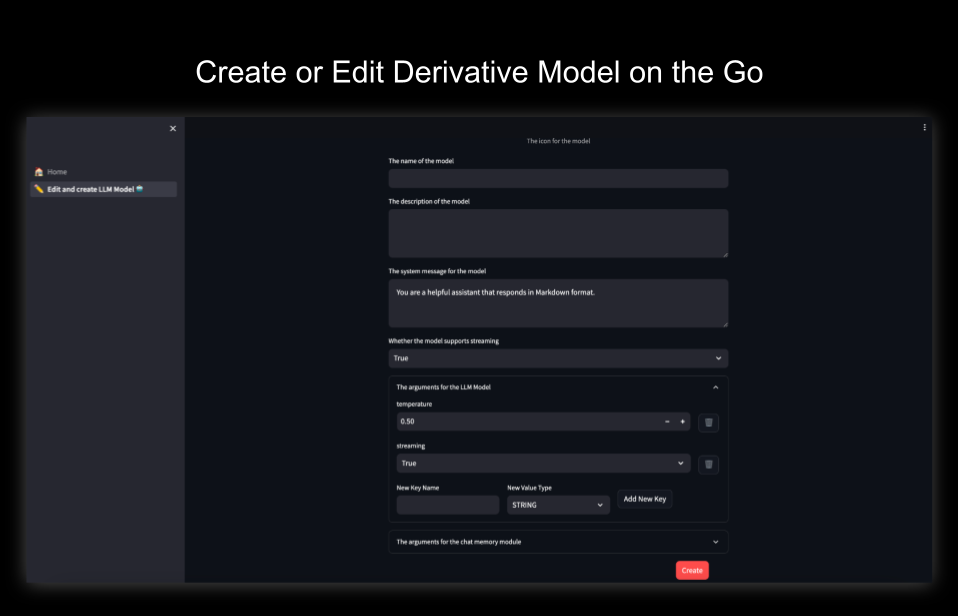

Introduction to AI ChatVerse
Dive into the world of conversational AI with AI Chatverse, a free and open-source application tailored for enthusiasts, developers, and AI aficionados alike. Built upon the robust foundation of Streamlit, AI Chatverse offers a user-friendly chat interface that seamlessly integrates with any chat model, be it from Langchain or a custom-built solution of your choice.
What sets AI Chatverse apart is its feature: the ability to dynamically craft a ‘session model’. These session models allow users to modify and experiment with existing models in real-time. Whether you’re keen on tweaking the system prompt, adjusting hyperparameters like temperature, or just wish to test the waters with chatbot models, AI Chatverse offers a playground for all your experimentation needs.
 

Features
Open Source and Free The project has an opensource license.
Easy Integration with langchain its very easy to integrate a model available in langchain.
Doesn’t store data We do not store any of your conversations, your messages are stored in streamlit sessions i.e once you close the App the data is gone!.
Note: The model you use might store the data on it’s end. Look into the specific model for more details.
Self-Hosted: The application can be run in any environment which can run python application, we have dockerised the container so you can use that image as well.
The architecture